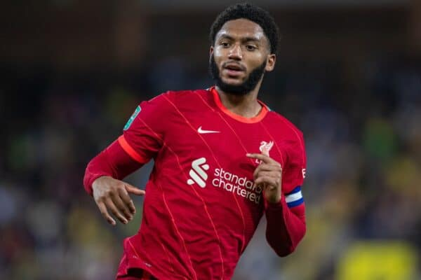
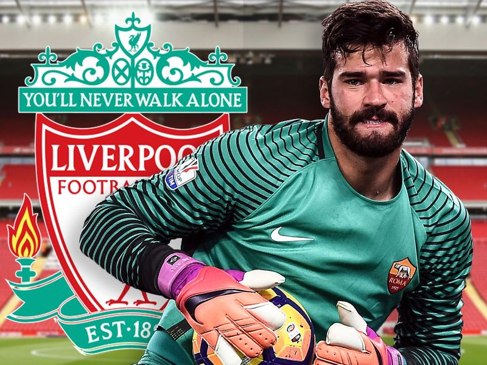
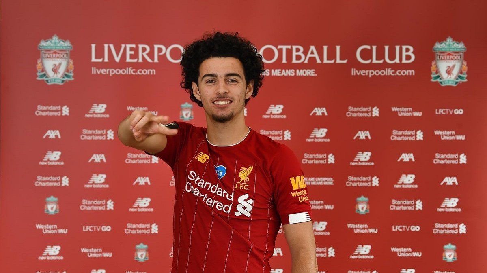

JUGADORES
| Alexis Mac Allister |
|---|
|
Es un futbolista argentino. Se desempeña como mediocampista ofensivo o volante mixto y su equipo es el Liverpool F. C. de la Premier League. Mac Allister nació el 24 de diciembre de 1998 en Santa Rosa, La Pampa. Los hermanos mayores de Mac Allister, Francis y Kevin, también son futbolistas. Son hijos de Carlos Mac Allister y sobrinos de Patricio Mac Allister, ambos futbolistas retirados. Los Mac Allister son originarios de Escocia, aunque la ascendencia más reciente de Mac Allister es de ascendencia irlandesa. 
|
| Joseph Dave Gomez |
|---|
|
es un futbolista inglés que juega como defensa en el Liverpool F. C. de la Premier League de Inglaterra. Es internacional con la selección de fútbol de Inglaterra. Joe Gomez llegó a la academia del Charlton Athletic en 2007, con apenas diez años. Debutó como profesional el 12 de agosto de 2014 en la Copa de la Liga, se enfrentó a Colchester United, a pesar de ser su primer encuentro jugó todo el partido como lateral derecho y ganaron 4 a 0. En octubre firmó un nuevo contrato que le ligaba al club hasta 2017.  |
| Alisson Ramses Becker |
|---|
|
Es un futbolista brasileño que juega como portero en el Liverpool F. C. de la Premier League. Nacido en Novo Hamburgo, Río Grande del Sur, se unió al equipo juvenil del S. C. Internacional en 2002, a los diez años. El 17 de febrero de 2013 debutó en el partido contra Cruzeiro E. C. que terminó empatado a uno. Su hermano mayor, Muriel Gustavo Becker, era el guardameta titular en esa etapa.  |
| Curtis Julian Jones |
|---|
|
es un futbolista británico que juega en la posición de centrocampista para el Liverpool F. C. de la Premier League de Inglaterra. Ha sido internacional con la selección de Inglaterra en las categorías sub-16, sub-17, sub-18, sub-19 y sub-21, respectivamente.En la categoría sub-16 hizo su debut el 25 de octubre de 2016 en la derrota de su selección frente a la selección sub-16 de los Estados Unidos, con un resultado 1-2 a favor de los estadounidenses.  |